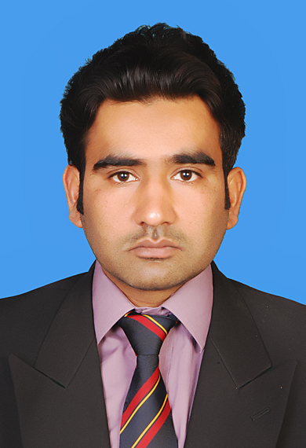

Cell Number: 03328513235
Email: naeem.mohsin@psmltd.com
Institute: UET TAXILA
Post Graduation: M.E(Manufacturing Engineering) Institute: NEDUET
in an organization with a competitive,
motivating and learning environment
where my professional expertise can be put to use.
To work with an organization
having a dynamic and “make it happen” like attitude.
Attended a training workshop arranged by FAG Bearings.
Attended firefighting training program
Attended training on seven basic tools of quality, organised by PIQC institute of quality,
Attended training about 5S Workplace Organization a step towards TQM (Total quality management)
Personal Information
Name: Muhammad Naeem MohsinCell Number: 03328513235
Email: naeem.mohsin@psmltd.com
Qualification
Graduation: B.E(Mechatronics Engineering)Institute: UET TAXILA
Post Graduation: M.E(Manufacturing Engineering) Institute: NEDUET
Career Objective
To establish myself as a professional web developerin an organization with a competitive,
motivating and learning environment
where my professional expertise can be put to use.
To work with an organization
having a dynamic and “make it happen” like attitude.
Certification
Attended a training program about VAPORAX 1800 LN water tube, forced draught boilerAttended a training workshop arranged by FAG Bearings.
Attended firefighting training program
Attended training on seven basic tools of quality, organised by PIQC institute of quality,
Attended training about 5S Workplace Organization a step towards TQM (Total quality management)
My Static Resume
Work Experience
Employer: PSMDesignation: Manager
Duration: 2016~2024
Responsibilites:
Ensure implementation of 5S workplace organization a step towards achieving
TQM in the organization
Ensure implementation of health & safety (HSE) at workplace
Ensure that works performed are in compliance with ISO standards and
proper implementation of TPM
Outsource the jobs through pre-qualified workshops to share work load or
if in house machining facility is not available
Keep my superiors updated about activities performed on daily basis and
in case of any emergency report them immediately
Develop a productive working environment with my colleagues &
workforce to develop a culture of team work at workplace
Analysing drawings, making them understandable for the operators and
developing the new ones when required
Employer: PSM
Designation: MTO
Duration: 2015~2016
Responsibilites:
Ensure implementation of 5S workplace organization a step towards achieving
TQM in the organization
Ensure implementation of health & safety (HSE) at workplace
Ensure that works performed are in compliance with ISO standards and
proper implementation of TPM
Outsource the jobs through pre-qualified workshops to share work load or
if in house machining facility is not available
Keep my superiors updated about activities performed on daily basis and
in case of any emergency report them immediately
Develop a productive working environment with my colleagues &
workforce to develop a culture of team work at workplace
Analysing drawings, making them understandable for the operators and
developing the new ones when required
Skills
AutoCAD: Experties Level: ProficientMS Office: Experties Level: Proficient
Official Communication: Experties Level: Proficient